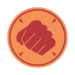

About the Hoovy
.
The Heavy Weapons Guy, more commonly known as the Heavy, is a towering hulk of a man hailing from the USSR. He is the largest and possibly most dangerous class in Team Fortress 2. Boasting the most default health and devastating firepower from his trusty Minigun, the Heavy is no pushover. The Heavy's Minigun can inflict heavy damage at a high rate of fire, allowing him to mow down opposing babies, cowards, and teeny-men in seconds. The Heavy's movement speed is his main weakness. Upon revving up or firing his Minigun, his already unimpressive speed drops down to an even lower amount, making him a very easy target for Snipers and Spies. His slow speed makes him more dependent on support from Medics and Engineers to keep him in the fight. Aside from decimating entire teams, the Heavy is able to provide further support for his comrades with an often required health boost via his Sandvich, which, when consumed, is capable of healing him to full health. It can also be dropped to provide an instant 50% health boost to his teammates, systematically equal to a Medium Health kit. However, if the Heavy isn't careful, an enemy may pick up the dropped Sandvich for a health boost of their own.

Heavy Bio
Name: Mikhail
Location of Origin: Dzhugdzhur Mountains, Khabarovsk Krai, USSR
Job: Mow Down
Motto: "Shooting Good."
Emblems:  
Description: Like a hibernating bear, the Heavy appears to be a gentle giant. Also like a bear, confusing his deliberate, sleepy demeanor with gentleness will get you ripped limb from limb. Though he speaks simply and moves with an economy of energy that's often confused with napping, the Heavy isn't dumb; he's not your big friend and he generally wishes that you would just shut up before he has to make you shut up.